探索 DeepTutor主頁
一個輸入框藏著 25 個工具？DeepTutor 主頁全體驗，4 種主模式隨便切，越用越香！
DeepTutor 的預設智慧代理迴圈——能力、黏性上下文、一次性引用、工具、活動面板，以及驅動這一切的模型。
原文連結：https://docs.deeptutor.info/zh-cn/explore/chat-workspace/
一個聊天輸入框，到底能塞進多少東西？
最近我把 DeepTutor 的主頁（Home）整個摸了一遍，越摸越覺得這玩意設計得講究。
先報數字：輸入框左下角有 4 種主模式一鍵切換，工具面板裡躺著 25 個內建工具：5 個由你手動開關、20 個按需自動掛載，還沒算各能力追加的那批。
但是問題來了，功能堆這麼多，普通人上手指不指得住？
接下來我們就按介面、上下文、工具、設定一條線拆開講，看完你就知道這個主頁到底該怎麼玩。
主頁是什麼
主頁是 DeepTutor 的核心。它是預設的智慧代理迴圈（agent loop），遠不止一個普通輸入框：呼叫工具、閱讀你的資料、檢索知識庫、記筆記、生成圖片、諮詢其他智慧代理、在需要時反問你、切換到更深的能力，這一切都在同一個對話裡完成。
它在哪裡
點選左側欄的 Home（首頁）。每一段新對話都從這裡開始。
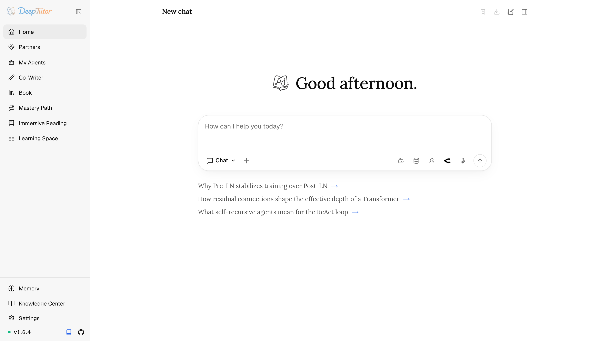
介面三塊，各管一攤
| 區域 | 作用 |
|---|---|
| 左側欄 | 主要介面入口——Home、Partners（夥伴）、My Agents（我的智慧代理）、Co-Writer、Book、Mastery Path、Immersive Reading、Learning Space（學習空間）； Recents 列出可續聊的會話；底部固定 Memory（記憶）/ Knowledge Center（知識中心）/ Settings（設定）。功能行可拖曳排序或移進 More ，Recents 裡的對話也能拖曳排序。 |
| 輸入框 | 訊息框。 左下角 決定這一輪是哪種「能力」，並用 + 加入一次性上下文； 右下角 提供連線智慧代理、知識庫、人設與模型選擇器。麥克風只轉寫當前訊息。 |
| 活動面板 （右上角切換） | 當前會話用到的工具呼叫、引用、生成的檔案、附件與預覽，並能快速開啟一個 URL 或本機檔案。 |
啟用身份認證後，已登入使用者還會在側欄看到 My profile。這裡顯示不可編輯的使用者名、角色與加入日期；你可以上傳頭像，或選擇圖示和顏色，也可以退出登入。
對話上方的右上角圖示分別用於：把某一輪收藏進筆記本、把整段會話匯出為 Markdown、展開/收起活動面板。
起始建議：空白框不尷尬
空白的輸入框是個糟糕的提示詞。
在它下方，DeepTutor 會給出三行取自你自己歷史的建議（L3 記憶綜合，加上你在各個介面上最近的若干次活動），每一行都重在往前推進，不在回顧舊事。換一批會重新抽。
Settings → Chat → Starting points 決定餵給它們多少歷史：把活動條數調高，建議的取材面更廣；調低，則更貼近你剛才在做的事。
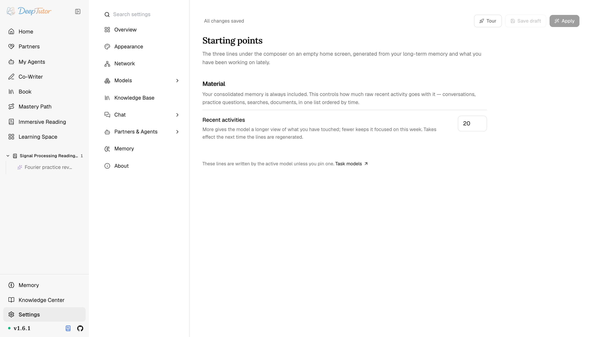
智慧代理迴圈：它是怎麼「想」的
DeepTutor 聊天執行的是單一智慧代理迴圈，因此一條訊息在你看到答覆前，內部可能要走好幾輪：
1、模型讀取你的訊息與已掛載的上下文，然後直接作答，或規劃一次工具呼叫。
2、若需要工具，DeepTutor 派發工具並把觀測結果追加進來（可在活動面板裡即時看到）。
3、模型帶著更充分的證據繼續：閱讀資料、檢索知識庫、執行程式碼、抓取網頁。
4、一條不再呼叫工具的最終訊息，結束這一輪。
ask_user 很特殊：與其瞎猜，智慧代理可以暫停這一輪，向你提出結構化的澄清問題，待你回答後再繼續。
選擇一種能力
輸入框左下角的選擇器（預設顯示 Chat）決定由哪種 capability（能力）處理這一輪。各能力共享編排與會話上下文；有些複用 Chat 迴圈，有些執行專用處理管線（pipeline）。
Home 中有四種主模式一鍵可達：Chat、Ask Questions、Quiz 與 Visualize；Immersive Watching、Research 和 Solve 收在 More Capabilities 彈出層裡。Mastery Path 與 Immersive Reading 是左側欄裡的獨立工作區，不再是 Home 模式。這個分組只關乎呈現，並不代表各模式如何執行。
| 能力 | 適用於 |
|---|---|
| Chat | 可用任意工具的靈活對話——開放式問答、輕量工具使用，日常預設。 |
| Ask Questions | 先用一張結合上下文的提問卡補齊資訊，再依據你的回答完成原請求。 |
| Quiz | 自動驗證的出題：練習題、模擬題、從你的資料出題。 |
| Visualize | 圖表、示意圖、可互動 HTML、SVG、Mermaid 與 Manim，由可擴充的 visualizer 目錄選擇。 |
| Immersive Watching | 帶同步播放器、字幕線索、時間戳依據和進度儲存的 YouTube 學習。 |
| Research （在 More Capabilities 下） | 全面的多智慧代理研究：子話題分解、RAG / 網路 / arXiv 檢索、帶引用的報告。 |
| Solve （在 More Capabilities 下） | 多步推理與解題，帶驗證和完整解答過程。 |
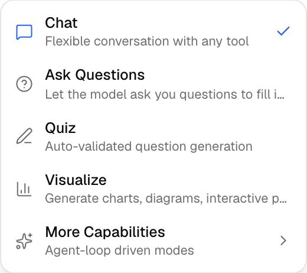
Immersive Watching 接受普通 watch、Shorts、Live、Embed 與 youtu.be 連結。影片會在 Chat 旁開啟，字幕證據綁定到時間戳，Explain here 可把當前 cue（字幕片段）變成有依據的問題；沒有字幕時仍可播放。原生 YouTube 使用隱私增強播放器，也可在設定裡切到自託管 Invidious，且不會重建材料或清空進度。
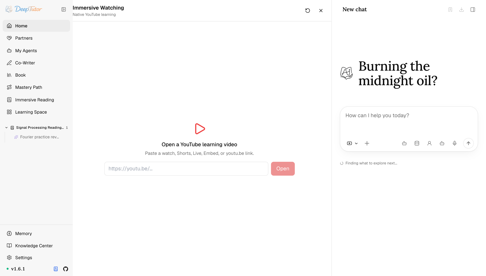
Visualize 的渲染模式現在來自目錄。SVG、Mermaid、Chart.js、可互動 HTML、Manim 動畫與分鏡是核心型別；GeoGebra 是可選的內建安裝項。你也能匯入包含 visualizer.json 與瀏覽器資產的 ZIP；匯入的 renderer 在沙箱 iframe 中執行，不含後端 Python，並可按使用者啟用、停用或移除。
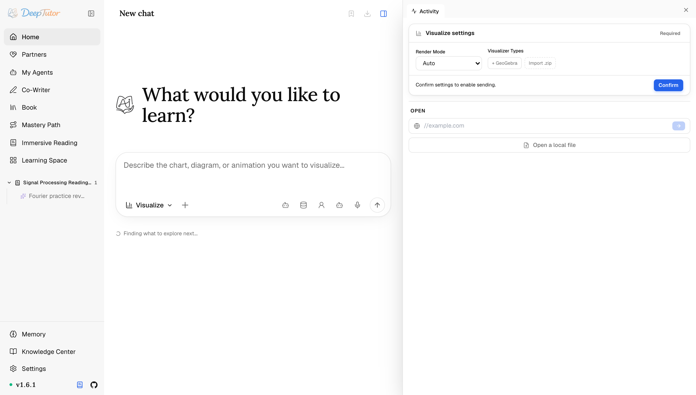
Little Tutor——追問一段選區
選中對話中的文字並開啟 Little Tutor，即可啟動一條獨立、以來源內容為依據的側欄執行緒。它巢狀在來源對話下，繼承所屬課程，並使用自己的聚焦上下文而不載入全域記憶或通用工具，因此精讀追問不會打斷主執行緒。
黏性上下文 vs. 一次性引用
DeepTutor 把上下文分成兩類，輸入框也把它們放在兩個不同的位置，這是這一頁最關鍵的一個概念。
黏性會話上下文會跨輪持續生效，直到你手動更改：能力、工作區或課程綁定、工具、知識庫、人設、模型以及 Reading / Mastery 狀態。右側提供相關選擇器；透過 Agent 膠囊或 @ 選中的智慧代理會留在本會話裡，而麥克風只填入當前草稿。
一次性引用藏在左側的 + 按鈕後面，只把某個具體資產拉進當前這一輪。
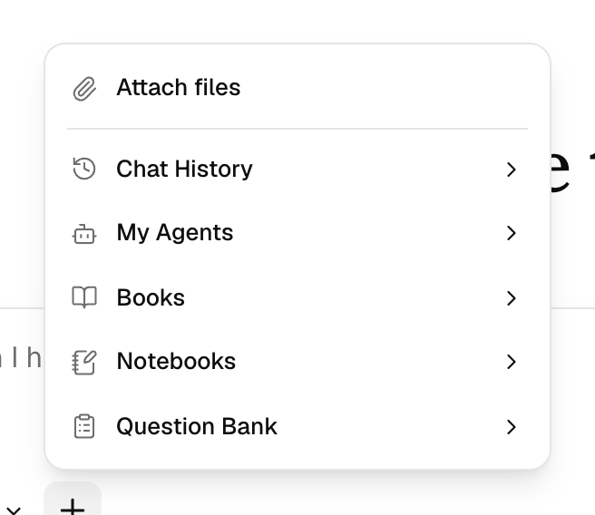
| + 引用 | 拉進什麼 |
|---|---|
| Attach files | 一份 PDF、圖片、Office 文件、Markdown 或資料檔案，交給智慧代理閱讀。 |
| Chat History | 把過去的某段會話作為背景資料。 |
| My Agents | 一份匯入的 Claude Code / Codex 對話記錄供探查——見 我的智慧代理 。 |
| Books / Reading / Notebooks / Question Bank | 一本已編譯的書、一個閱讀片段、一個已儲存的筆記本，或 學習空間 裡的練習材料。 |
| Memory | 某一份具體的記憶文件——當你希望智慧代理依據一條你指得出來的事實工作，而不是依據召回碰巧撈上來的東西。 |
在主 Chat 輸入框裡鍵入 @，會篩選與 Agent 膠囊相同的連線智慧代理列表，並把選中項保留在本會話中。沒有即時智慧代理選擇器的跟進介面，則繼續用 @ 開啟 Space 引用選單。
知識庫——把答案錨定到你的資料
資料庫圖示開啟知識庫選擇器。選中一個或多個知識庫後，它們會在整個會話裡保持掛載；每當問題需要依據時，智慧代理就會從中檢索。
具體怎麼檢索，取決於這個庫綁定的引擎。回答讓你意外的時候，這個區別很值得知道。
大多數庫（LlamaIndex、GraphRAG、LightRAG、連結的現成索引、遠端 LightRAG Server、騰訊 IMA 庫）由 rag 工具服務。
PageIndex OSS 與 PageIndex Cloud 不是：它們的檢索本身就是智慧代理式的（agentic），閱讀迴圈會遍歷本機或託管文件樹，因此這些庫被有意排除在 rag 列表之外。
Obsidian 庫壓根沒有索引，會被路由給 Obsidian 能力，由它直接瀏覽即時檔案；MarginNote 4 庫是同一種形態，由它自己的一組工具來走。
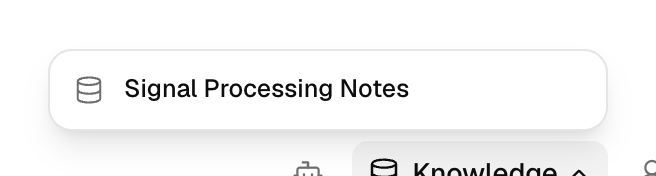
人設——設定語氣與立場
人物圖示用於選擇人設。Default 是樸素的助手；內建的 peer（同伴）、research-assistant（研究助理）、teacher（老師）等會改變語氣與教學風格。人設在學習空間中管理，並可被夥伴複用。
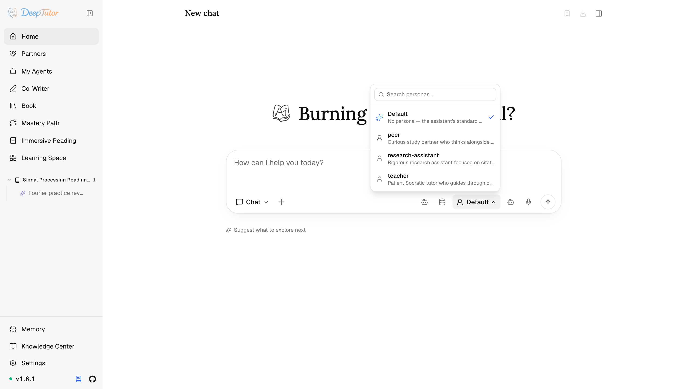
模型——逐輪切換
模型膠囊決定這一輪用哪個模型。你在設定裡配好的每個模型都會列在這裡，並標註提供商與上下文視窗，預設模型有標記。處理大文件時切到長上下文模型，閒聊時切到更便宜更快的模型，會話中途即可切換，不丟上下文。
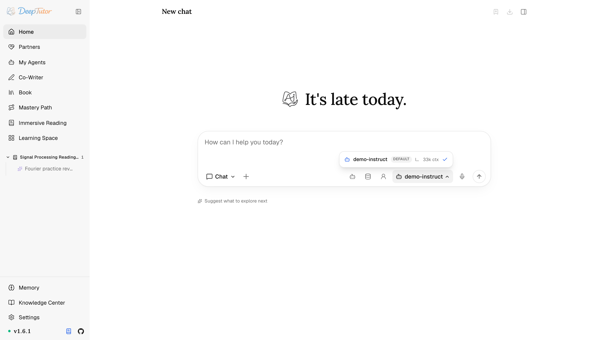
活動面板：全程可稽核
右上角的面板切換按鈕會開啟 Activity（活動）：當前會話用過的工具、引用與檔案的即時記錄，生成的檔案排在你上傳的之上，外加一個 Open 框，可把 URL 或本機檔案拉進應用內的檢視器。
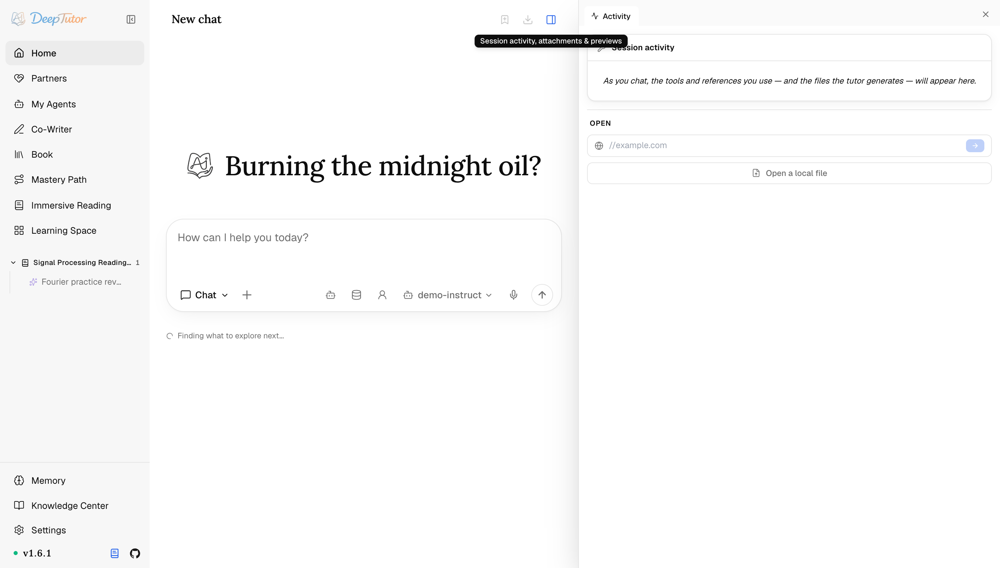
一輪進行時，每次工具呼叫都會摺疊成一個緊湊的標題（例如 Done · 21s），展開即可檢視輸入與輸出，對話保持清爽，完整軌跡依然可稽核。
知道視窗有多滿
輸入框上有一個膠囊，報告這一輪實際佔用了模型上下文視窗的多少、以及是什麼在佔：提示詞塊、工具 schema（工具的結構定義）、訊息列表。它是從已經拼裝好的提示詞上量出來的，不是事後重新推算的，所以這個讀數不可能和真正發出去的內容對不上。點開看明細，再決定要不要換一個長上下文模型，或者乾脆開一段新會話。
長對話還會在正文左側空白處長出一條刻度軌，你每問一次就多一格，用來在歷史裡跳來跳去而不必捲動。
工具——也包括生成
工具分兩類，區別在於由誰來決定。
由你決定的是 Settings → Chat → Tools 裡那些體驗增強工具：brainstorm、web_search、paper_search、reason 與 geogebra_analysis；配好相應的生成模型後，還會有 imagegen 與 videogen。
由上下文決定的是其餘那些：它們在有用時自動掛載，從輸入框的角度看是常開的——rag、kb_files、read_source、read_memory、write_memory、read_skill、list_notebook、write_note、question_bank、web_fetch、github、ask_user、load_tools、cron、mastery_topics、mastery_sessions、mastery_open_session、mastery_new_session，以及兩條程式碼路徑 code_execution 與 exec（沙箱 shell）。能力還會在此之上追加自己的：七個閱讀工具、精通之路的教學工具、consult_subagent 等等。（夥伴是例外：可以逐個禁掉某個自動掛載的工具——見夥伴。）
把事情排到以後做
cron 讓一個回合可以把活兒排期而不是當場幹完：在某個時刻、每隔 N 秒，或者按一條帶時區的 cron 表示式。任務到點時，它的訊息會作為一條新指令在同一段對話裡執行，回覆也落在這裡，所以「工作日每天早上九點就這一章考我」是一句話，而不是一個設定頁面。同一個工具還能列出本對話的任務、取消其中一個。對夥伴而言，到點的任務會順著它所連線的 IM 管道發回去。
在設定裡配好一個圖像生成（或影片生成）模型，它也會變成聊天工具：用自然語言提出需求，智慧代理便會呼叫它，並把結果行內預覽、附上可下載的檔案。
設定聊天能用到的東西
輸入框工具欄裡的一切，最終都對應到 Settings（設定）裡的設定。
Settings → Models 是模型所在之處：LLM、Task Models、Embedding、Search、文字轉語音（TTS）、語音轉文字（STT）、圖像生成與影片生成。Task Models 負責會話標題與 Home 輸入框下的起始建議；TTS 驅動朗讀，STT 驅動麥克風，圖像/影片模型則成為聊天工具。
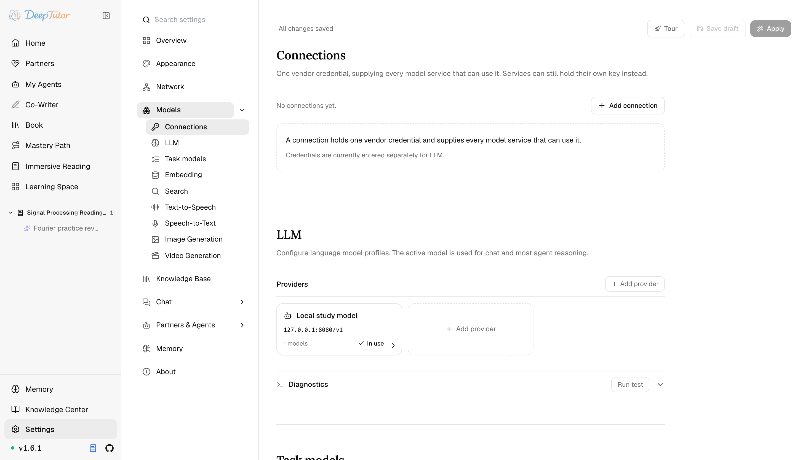
Settings → Chat 下面有五樣東西：Video Learning（YouTube / Invidious 播放與字幕設定）、Tools、Capabilities（各能力的 LLM 參數與執行環境旋鈕）、Starting points，以及 Attachments（上傳上限與文字提取預算）。MCP（模型上下文協定）服務不再在這裡設定，它和 CLI App 一起歸到學習空間，詳見 DeepTutor 生態。
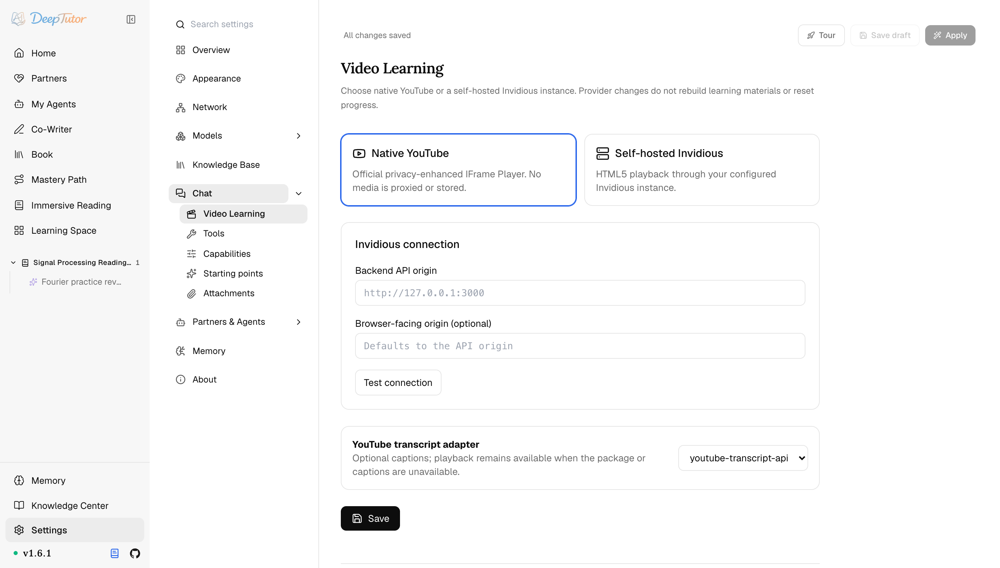
完整的控制面板見設定。
在手機上
窄於平板寬度時，工作區會收成單欄加一個抽屜式側邊欄，於是同一段對話在手機上是能用的，而不是把一個三欄桌面佈局渲染到視口之外。
實用範例
挂载一个知识库 + 提问：「讲讲第 4 章，并就我薄弱的点考我。」附加一份 PDF + 提问：「抽取其中的假设，并把最终摘要存进我的笔记本。」deeptutor run chat "讲讲傅里叶变换" --tool rag --kb signals
deeptutor chat --capability deep_research --kb papers相關閱讀
- 沉浸式閱讀 ——同一個迴圈，旁邊開著一份文件
- DeepTutor 生態 ——智慧代理可呼叫的 Skill、MCP 服務與 CLI App
- 夥伴 ——同一個迴圈，執行在 IM 夥伴裡
- 我的智慧代理 ——在一輪聊天裡諮詢 Claude Code、Codex 或某個夥伴
- 知識中心 ——建置你在這裡掛載的 RAG 庫
- 記憶 ——迴圈讀寫的個人化記憶
- 設定 ——模型、工具、能力與執行環境控制
上手把玩幾輪就知道了，這套黏性上下文加一次性引用的組合是真能打，越用越真香。實際效果還會受到模型、提示詞以及具體使用場景的影響，建議大家結合自己的需求實際體驗評估。